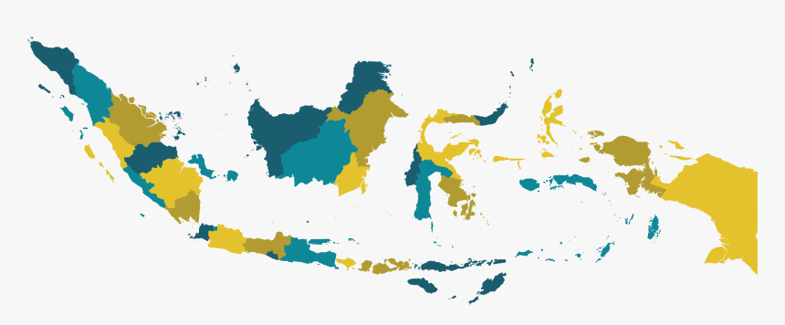

Pilih IKK Outcome :

■Sangat Baik
■Baik
■Sedang
■Buruk
■Sangat Buruk
| No. | Provinsi | Status Kinerja |
|---|---|---|
| 1 | Aceh | Sedang |
| 2 | Sumatera Barat | Sedang |
| 3 | Sumatera Selatan | Sedang |
| 4 | Sumatera Utara | Sangat Baik |
| 5 | Riau | Sangat Baik |
| 6 | Kep. Riau | Sangat Baik |
| 7 | Jambi | Sedang |
| 8 | Bengkulu | Sedang |
| 9 | Bangka Belitung | Baik |
| 10 | Lampung | Buruk |
| 11 | Banten | Baik |
| 12 | DKI Jakarta | Sedang |
| 13 | Jawa Barat | Sedang |
| 14 | Jawa Tengah | Baik |
| 15 | Jawa Timur | Sangat Baik |
| 16 | Yogyakarta | Sangat Baik |
| 17 | Bali | Baik |
| 18 | Nusa Tenggara Barat | Sangat Buruk |
| 19 | Nusa Tenggara Timur | Buruk |
| 20 | Kalimantan Barat | Baik |
| Status Kinerja | Frekuensi (Provinsi) |
|---|---|
| Sangat Baik | 5 |
| Baik | 10 |
| Sedang | 11 |
| Buruk | 2 |
| Sangat Buruk | 3 |
| Total | 34 |